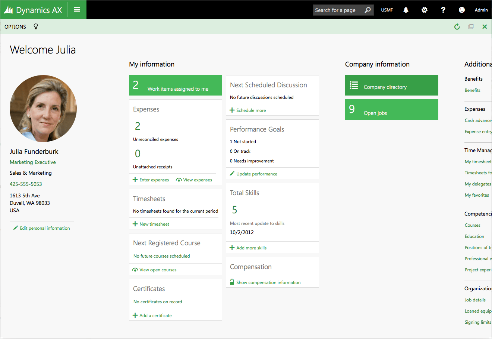
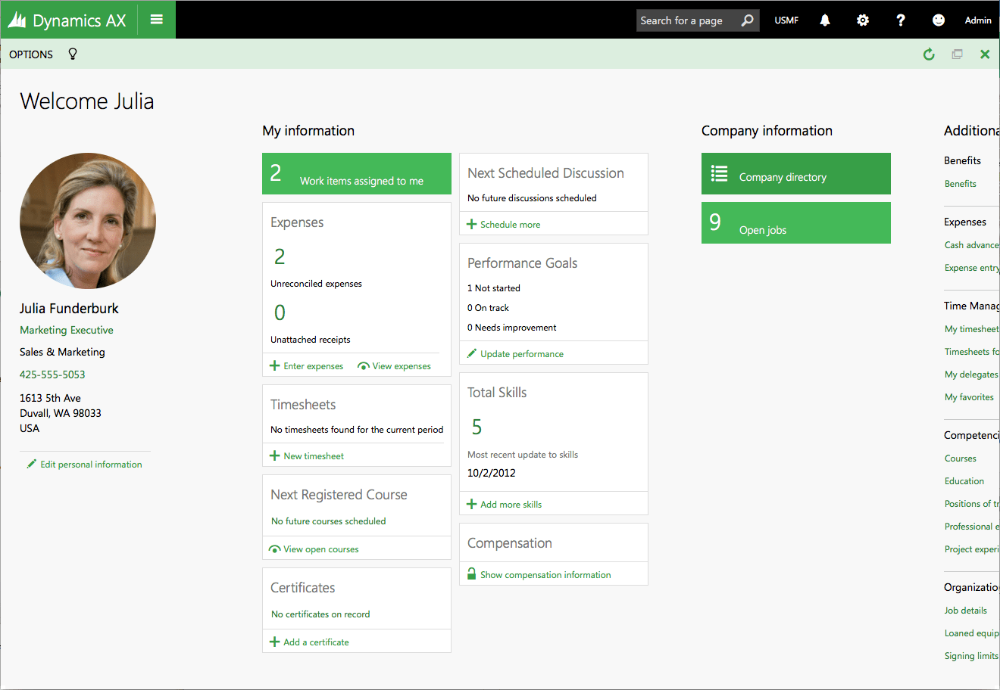
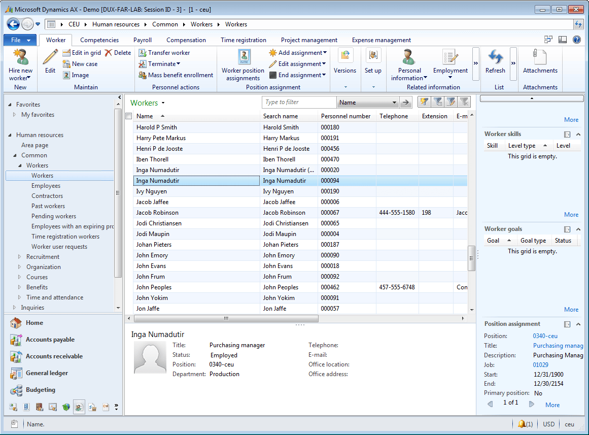
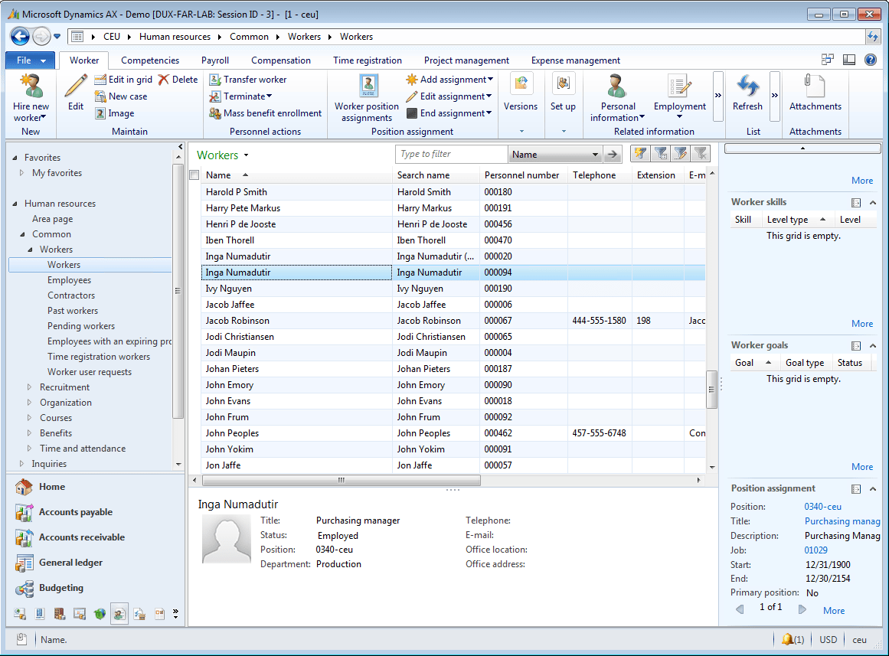

BrianGlaeske
http://brian.glaeske.name
I am a user experience designer specializing in interaction design, information architecture, user interface architecture, patterns, and design systems. At FarmQA, an ag-tech startup, I serve as the director of product and user experience and have many different hats that I wear — including SEO and marketing, testing, front-end development, and managing iOS/Android releases. Formerly, I focused on enterprise human resources and financial software within Microsoft Dynamics.
As a life-long learner, I am an expert in HTML, CSS, and accessibility guidelines. My expertise in these concepts translates into better designs for the user. I also bring the ability to refine and perfect the user interface as delivered by engineering into an app that is usable and desirable by the users. While not an expert yet, I have been learning how to optimize a web site for search.
The best design feedback is direct customer feedback. Instrumental to design is understanding customer problems. The best way to understand customer problems is to talk to them.
Design is a collaborative effort, not solo. User experience is about bringing a voice to the user to engineering and product management. Personas, wireframes, prototypes, and style guides are part of the collaboration toolbox with the product team.
Director of Product and User Experience — FarmQA
I am responsible for the user experience of FarmQA's apps, web site, social media, and marketing. I developed a design system and pattern library for FarmQA products based on the Microsoft Fluent language. Our success is dependent on customer feedback; I make sure it reflects in our products.
Current accomplishments include:
- Design of our Recommendations feature. This included high level storyboards, prototypes and working with engineering.
- Designed and developed FarmQA.com with current SEO practices.
- Redesign of the FarmQA web app. Reworked the base navigation, the map interface and alignment with the design system.
- Directed the completion of a new logo and brand system for FarmQA.
- Designed our first mobile application, FarmQA Scouting.
- Designed and led the development of the FarmQA Design System
- Tracked usage metrics and worked with customer support to resolve customer issues.
User Experience Designer — Microsoft
Working with a collaborative team, I defined the user interface implementation strategy and architecture for the web-based presentation framework. As the UI architect, I was also responsible for ensuring the accessibility of our product designs along with HTML/CSS guidelines and usage. I also abstracted the core interaction patterns from a set of over 3000 pages with the end goal of creating a framework for consistency in the user interface.
- As user experience architect, defined the strategy of the HTML5 Dynamics AX for desktop and mobile.
- Led the implementation of the CSS framework for the presentation framework and mentored other designers in HTML and CSS.
- Designed the user experience for various features in collaboration with other designers.
- Wrote guidelines for program managers and third party ISVs.
- Designed the user experiences for an HTML based HRM module.
- Designed a new information architecture for Microsoft Dynamics.
- Designed and received a patent application for a dynamic user interaction model base on the configuration of an adaptive business process.
Portfolio
FarmQA Web App

One of the first accomplishments when I started at FarmQA was to create the FarmQA visual language. The designs for the new FarmQA Controller are just being implemented with much of the work centered around making a more elegant mapping interface.
This interface is a bulk crop assignment tool. The tool allows the user to quickly assign crops to fields using the map and provides a summary of the number of acres for that crop.
This interface is a designer for customizable scouting templates. The goal is to provide a rich and interactive editing environment with a live updating preview pane that enables customers to quickly build a template for their operation.
FarmQA Scouting

This view displays a list of fields, ordered by distance. This is useful to the agronomist who is planning their route of fields to visit.

When viewing a scouting report, relevant information about the field is displayed. The agronomist can also quickly add a new observation and see their previous observations.


Entry of information is designed to be as easy as checking off a box on a paper form. The design also allows the agronomist to attach pictures and provide other map annotations.
FarmQA Web Site
Microsoft Dynamics 365 Talent
Example of a new card oriented page designed for this product. This design provided a snapshot of an employee in one view. The primary navigation was that of an organizational chart. The org charge control was very dynamic and fun to use.
This page allowed the manager to see a snapshot of their team and provided the ability to see details of any employee.
The Benefit management workspace is targeted at a benefit manager. It was designed as a one stop shop for everything related to benefits. In contrast, the previous AX version of Benefits was composed of 100's of forms and a large menu to navigate.
Microsoft Dynamics 365 Talent is a reimagined version Microsoft Dynamics AX Human Resources module. As the primary designer on the project, I developed the design goals for this product. Those goals included: simple, delightful, and functional.
I also designed an innovative "people-centric" navigation paradigm that focused navigation within the app around people. The organization chart of the company was the primary way to navigate.
Microsoft Dynamics AX


An example of the many forms that we migrated from AX 2012 to HTML.
 

An example of a new concept called Workspaces, introduced in this release. This page pattern collects and displays to the user many different aspects of their work from 100's of pieces of data stored in the HRM database.


This release of AX also featured an enhanced filtering design. This design is based on a familiar left-side navigation and presents the filters criteria in very understandable terms to the user.
In the future, we hope to enhance this to be a full faceted filtering experience.
This project reimagined Microsoft Dynamics AX from a Windows based application to a single page web app.
As the user experience architect, I facilitated the design strategy for the common usage patterns and rework of AX from a Windows application to HTML. This project has required the design team to deliver:
- Task analysis and task type development based on the Dynamics Customer Model. The task type analysis led to the development of basic interaction patterns for an ERP system.
- Scenario development and research.
- Scenario based wireframes.
- Wireframe toolkit development.
- User interface component design and specification.
- Component prototyping and front-end development using HTML5, CSS and Javascript.
- User interface guidelines and upgrade strategies from the legacy product.
- Led a team of front-end developers working on the CSS and HTML for the client of Dynamics AX. Assisted in implementation of a visual test strategy and defined the architecture of CSS standards for the organization.
- Defined the CSS architecture for a multi-device, multiple theme and responsive web application.
- Control development within the custom Angular- like binding services developed for Dynamics AX.
Dynamics AX 2012

An example of a form that embodies the entity detail pattern. Due to the complex nature of the data stored required by the users, a complete information architecture had to be designed for forms like this. In this case, multiple iterations of the form were produced and tested with users. We also used card sorts to assist with refining the design of the information.
 

For list pages in the system, we added elements called Factboxes to the right side of the window. Factboxes allowed the user to see additional information about the selection, without having to drill down on the full entity. Our goal with the list pages was to provide the ultimate interface in the system where a user could find the data they need to work with and work against that data.
Another key form that we introduced was what we call a Simple List & Details. This form pattern replaced a form pattern that we found to be unusable by a majority of new users. We used automated tools and manual verification to convert over 200 forms to this pattern.
For the Dynamics AX 2012 release I led the team designing the core user experiences. This team researched the common problems and pain points across the system and determined how best to solve these issues for maximum benefit. The team redefined the patterns used by over 1000 forms.
Web-based HRM

The landing page for this product was envisioned to serve the needs of the employee and a manager. It was also to be used by the human resources department to publish news and information to the employees about important upcoming events.
The navigation of this product used a tabbed navigation system that was envisioned to be simple and understandable to a majority of the users.

The performance management landing page for an employee shows the employee the current status of the performance management process. Additionally, if the employee is also a manager, the page shows information related to the status of the manager's direct reports.
Throughout the product, progressive disclosure mechanisms, or super tooltips, were utilized to make information in the system easy to access.

This page shows an activity center for a recruiter. This page shows for a given position to be hired the status of all of the applicants for the position. Clicking on one of the stacks would open a list of applicants and provide a set of actions that could be taken against each one including viewing their resume and application.
This was to be a new HRM application integrating to Microsoft Dynamics to provide web-based access to human resource data to employees. As the lead designer, I delivered designs, guidelines and research. One of the primary innovations of this project was an interaction pattern library.
Project Time and Expense

For each project, a view of the tasks for that project are displayed. The information about each task includes title, description, due date, completion, and priority. Additional views provided the ability to display the tasks in a timeline or by due date.

An important performance indicator for a project team member is to ensure that their utilization numbers are high. One view displays the utilization for the team member in a natural manner including the use of a spark line to show the utilization trend over time.


Important to the project is that each project team members needs an efficient method of entering their time. Typically, this is a pain point with the users. This form was made as simple and efficient as possible. It was also envisioned that the time against a task could be entered using voice.
This is an exploration of a product to allow people to log project time and expenses in a service industry on the Windows Phone platform. The core scenario for this mobile application is that of monitoring tasks and deliverables.